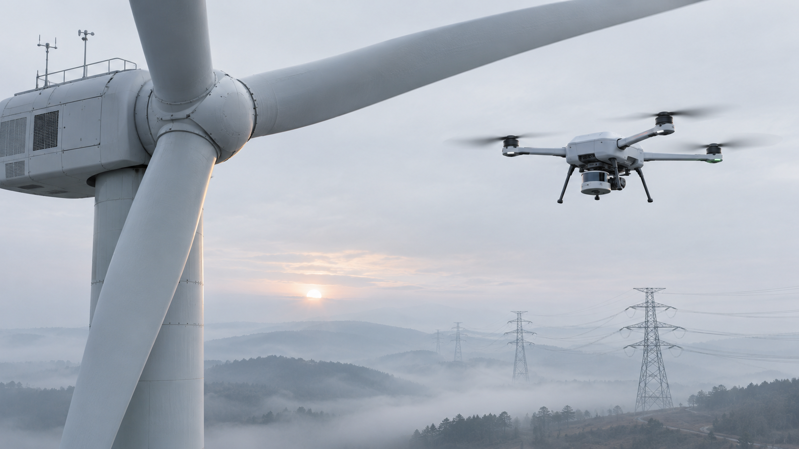
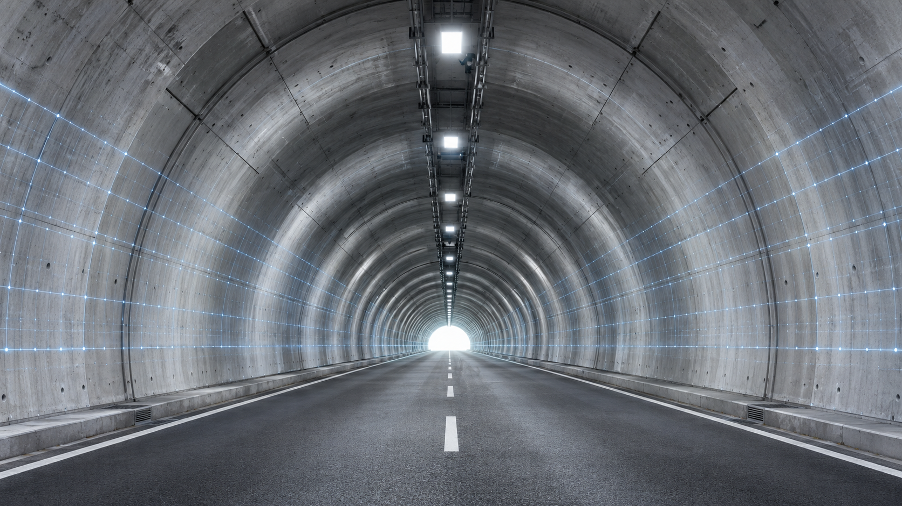
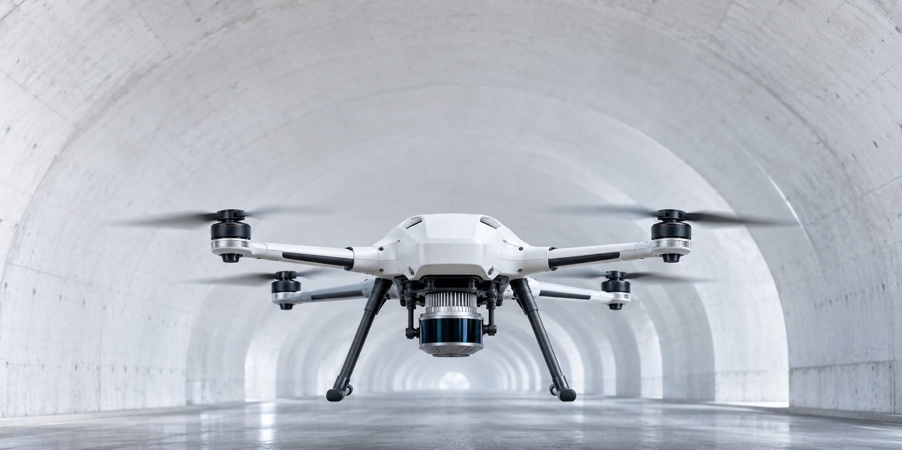

Safer access
Reduce time spent in elevated, confined and operationally sensitive areas.
Purpose-built missions for assets where access is difficult, downtime is expensive and evidence matters.

Energy corridor / Autonomous captureWind blades, transmission corridors and substations mapped without trading coverage for precision.
Plan a mission
Tunnels, bridges and transport assets captured as repeatable spatial records for condition review.
Plan a mission
Complex facilities reviewed with reduced exposure, faster access and a shared source of evidence.
Plan a missionCoverage is only useful when every point can be traced to a decision.
Reduce time spent in elevated, confined and operationally sensitive areas.
Return to the same position, angle and scope as conditions change.
Give engineering and field teams the same spatial source of truth.